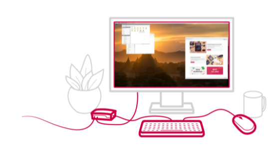

Raspberry Pi OS
Instale el sistema operativo Raspberry Pi con Raspberry Pi Imager
Raspberry Pi Imager es la forma rápida y fácil de instalar el sistema operativo Raspberry Pi y otros sistemas operativos en una tarjeta microSD, lista para usar con su Raspberry Pi. Mire nuestro video de 45 segundos para aprender cómo instalar un sistema operativo usando Raspberry Pi Imager. Descargue e instale Raspberry Pi Imager en una computadora con un lector de tarjetas SD. Coloque la tarjeta SD que usará con su Raspberry Pi en el lector y ejecute Raspberry Pi Imager.
Descargar para Windows Descargar para Ubuntu x86Para instalar en Raspberry Pi OS, escriba:
sudo apt install rpi-imager
en la Terminal.